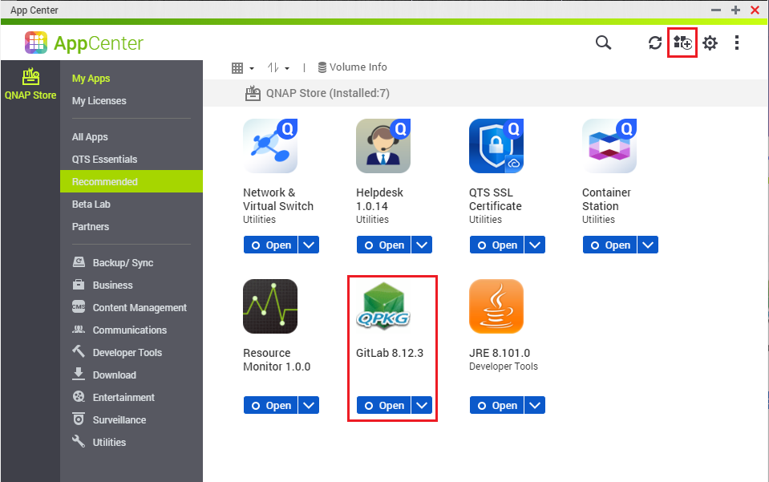
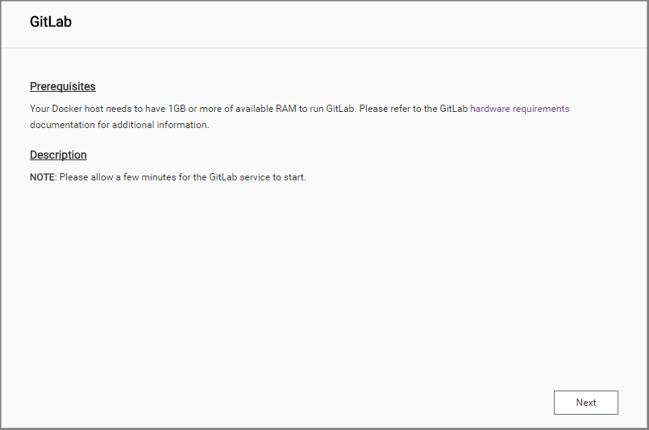
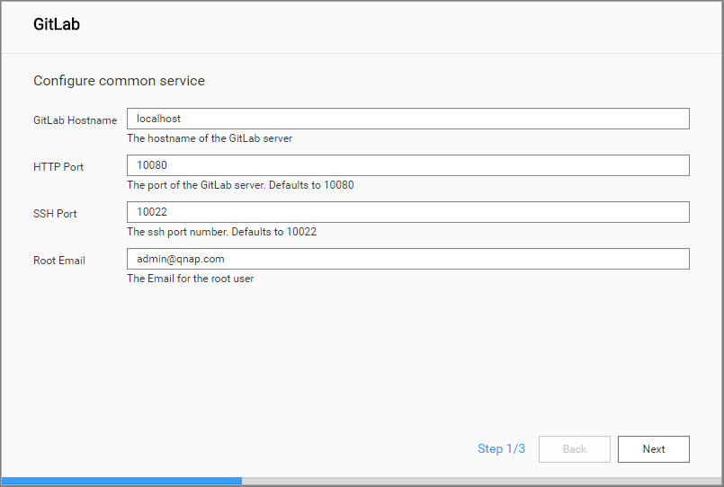
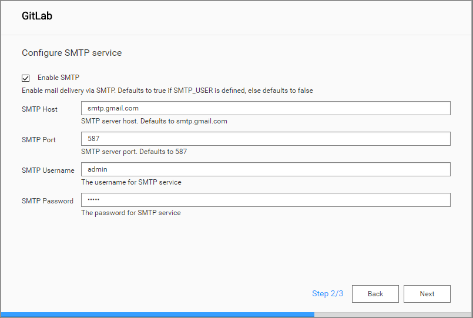
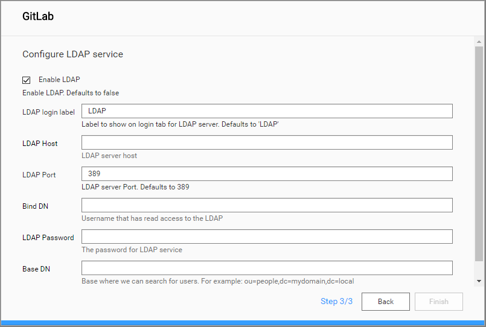
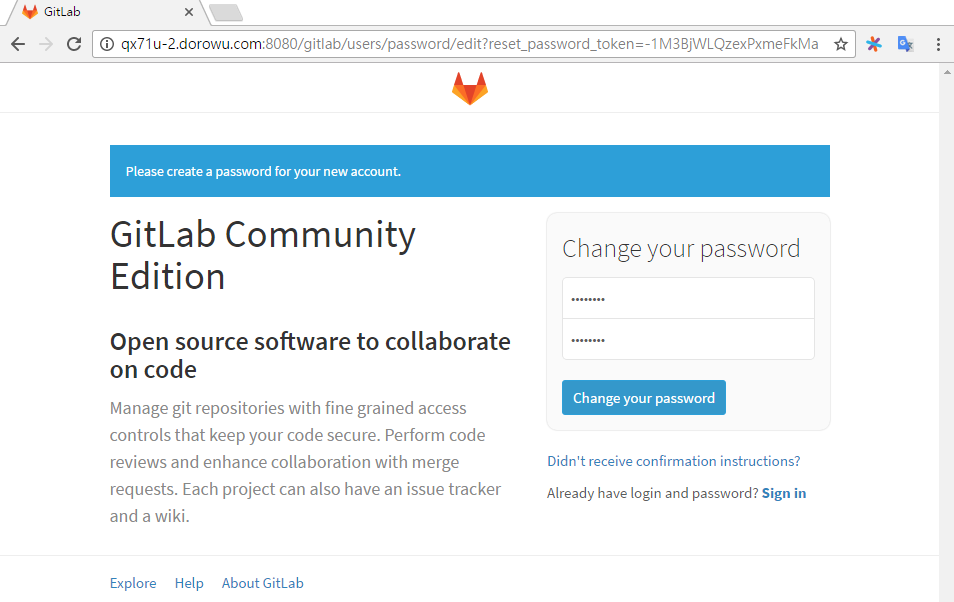
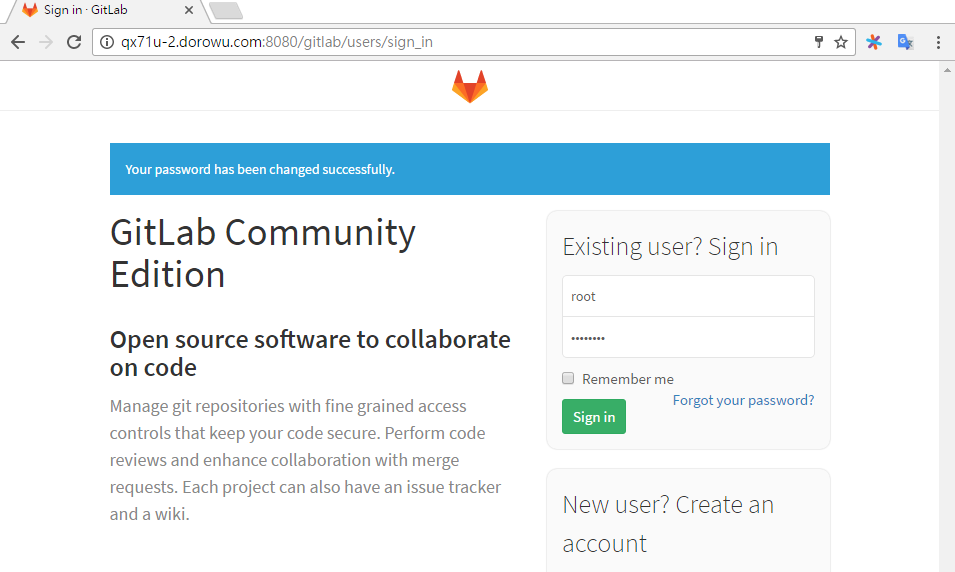
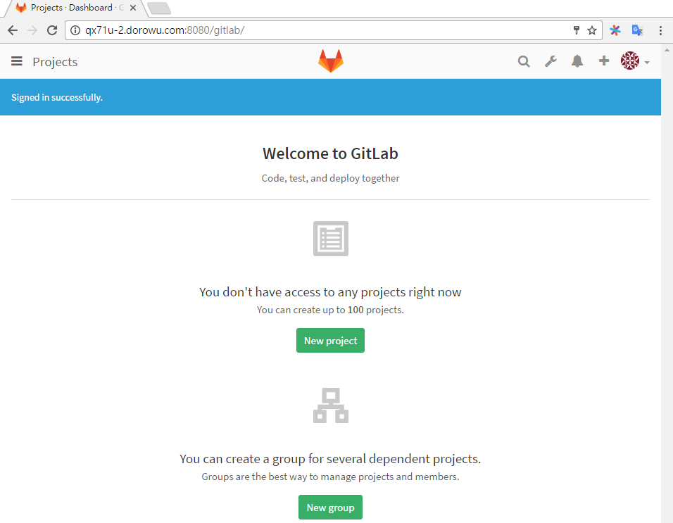

Dockerized QPKG¶
Contents
What is Dockerized QPKG (DQPKG)¶
Dockerized QPKG is a QPKG that simply ship Docker Application into QNAP NAS. DQPKG comprises a Docker-Compose file to describe application’s services, a setup wizard to configure Docker-Compose file before launching and a reverse proxy configure file to serve application with the same port as NAS.
Quick Start¶
A DQPKG is built by Docker Image (qnapnas/qdk2). Before starting to build DQPKG, you have to install Docker and Git on your Linux. Following demonstration is supposed to run under Ubuntu 16.04.
Get Docker¶
Update your APT package index including Docker.
$ sudo apt-get update $ sudo apt-key adv --keyserver hkp://p80.pool.sks-keyservers.net:80 --recv-keys 58118E89F3A912897C070ADBF76221572C52609D $ echo "deb https://apt.dockerproject.org/repo ubuntu-xenial main" | sudo tee /etc/apt/sources.list.d/docker.list $ sudo apt-get update
Install Docker.
$ sudo apt-get install -y docker-engine
Verify your installation.
$ sudo docker run hello-world
Full install instructions for all flavors of Linux we support are at Install Docker Engine.
Install Git¶
It is easiest to install Git on Linux using the preferred package manager of your Linux distribution.
$ sudo apt-get install git
For other Linux distribution, please refer to Download for Linux and Unix.
Download Sample Code¶
Docker-QDK2 is a tool for building multi-container Docker applications, and there are many example including in this repository.
Download Docker-QDK2 into your system.
$ git clone https://github.com/qnap-dev/docker-qdk2.git
Build Nginx QPKG¶
Change directory to docker-qdk2 and build Nginx QPKG.
$ cd docker-qdk2 $ sudo docker run -it --rm -v ${PWD}/example/nginx:/src walkerlee/qdk2-build
Nginx QPKG file will be generated in the nginx folder.
$ ls example/nginx/nginx_1.11.qpkg example/nginx/nginx_1.11.qpkg
You now can install your QPKG(or download here) in “App Center” → “Manual Install” of QNAP NAS.
Build Your Own Dockerized QPKG¶
In this section, we will explain Nginx QPKG in depth. The source code can be found in nginx folder in Docker-QDK2. “example/nginx” is the context for your application as shown in following. The directory should only contain resources to start that app.
example/nginx ├──build/ │ └── nginx_1.11_x86_64.qpkg ├── icons/ ├── package_routines ├── qpkg.cfg └── shared/ ├── docker-compose.yml ├── nginx.apache.conf.tpl ├── nginx.sh └── wizard/ ├── description/ │ ├── cht.md │ └── eng.md ├── i18n/ │ ├── cht.json │ └── eng.json └── install.json
Configure QPKG¶
Edit the content of “qpkg.cfg”
- QPKG_NAME: Name of the QPKG, which is usually composed in lowercase and hyphen(-)
- QPKG_VER: Version of the QPKG, which is limited to 12 characters and formed by digital and dot(.)
- QPKG_AUTHOR: Author of the QPKG
Example of nginx/qpkg.cfg:
QPKG_NAME="nginx" QPKG_DISPLAYNAME="Nginx" QPKG_VER="1.11" QPKG_AUTHOR="container@qnap.com" QPKG_SUMMARY="Nginx (pronounced "engine-x") is an open source reverse proxy server for HTTP, HTTPS, SMTP, POP3, and IMAP protocols, as well as a load balancer, HTTP cache, and a web server (origin server)." QPKG_SERVICE_PROGRAM="nginx.sh" QPKG_TIMEOUT="120,60" QPKG_REQUIRE="container-station >= 1.7.1893" QPKG_WEBUI="/nginx/" QPKG_WEB_PORT="-1"
Please refer to QDK - QPKG Development Kit for detail.
Customize QPKG routines¶
Content of file “package_routines”
- pkg_pre_install() : routines before install
- pkg_install() : routines during install
- pkg_post_install() : routines after install
- PKG_PRE_REMOVE : routines before uninstall
- PKG_MAIN_REMOVE : routines during uninstall
- PKG_POST_REMOVE : routines after uninstall
Content of file “shared/nginx.sh”
- Start : routines when starting the QPKG
- Stop : routines when stopping the QPKG
- Remove : routines when removing the QPKG
Take Nginx for example, when Nginx APP launch, nginx.sh call dqpkg service to pull image correctly and start Nginx service.
- Start - qbus put com.qnap.dqpkg/qpkg/nginx/start
- Stop - qbus put com.qnap.dqpkg/qpkg/nginx/stop
- Remove - qbus put com.qnap.dqpkg/qpkg/nginx/remove
Please refer to QDK - QPKG Development Kit for detail.
Add files to QPKG¶
Put files in below folders for different purposes:
shared/: Platform-independent files and folders. Details in the next section.
icons/: icon files
- ${QPKG_NAME}.gif is the image displayed in the web interface when the QPKG is enabled. It should be a GIF image of 64x64 pixels.
- ${QPKG_NAME}_gray.gif is the image displayed in the web interface when the QPKG is disabled. It should be a GIF image of 64x64 pixels. It is usually a grayscale version of the ${QPKG_NAME}.gif image, but that is not a requirement.
- ${QPKG_NAME}_80.gif is the image displayed in the pop-up dialog (with information about the QPKG and the buttons to enable, disable, and remove). It should be a GIF image of 80x80 pixels.
- If no icons are included then the QPKG is given default icons at installation.
Example: GitLab¶
This section demonstrates how to build GitLab and run a Dockerized QPKG on NAS. The GitLab project is under docker-qdk2/example/gitlab folder.
Download Gitlab QPKG directly: https://github.com/qnap-dev/docker-qdk2/raw/master/example/gitlab/build/gitlab_8.16.6_x86_64.qpkg
Define the project components¶
Referring to the previous section. Make sure all files required for installation are available.
Here is the contents of GitLab directory.
gitlab ├── build/ │ └── gitlab_8.16.6_x86_64.qpkg ├── icons/ ├── package_routines ├── qpkg.cfg └── shared/ ├── docker-compose.yml ├── gitlab.apache.conf.tpl ├── gitlab.sh └── wizard/ ├── description │ ├── cht.md │ └── eng.md ├── i18n/ │ ├── cht.json │ └── eng.json └── install.json
Create a GitLab QPKG¶
In this step, you create a GitLab started project by building the QPKG from the build context defined in the previous procedure. Before building the QPKG, you have to add a target of your project in docker-qdk2/example/Makefile.
Run the following command to build the QPKG.
$ cd docker-qdk2 $ sudo docker run -it --rm -v ${PWD}/example:/src walkerlee/qdk2-build bash -c "cd /src; make"
When procedure completed, the QPKG file would be created in build folder.
Install GitLab on NAS¶
First, Install GitLab in App Center and wait for the installation to complete. When clicking Open button of GitLab, the wizard description of GitLab will be shown in a new tab.
In order to run GitLab smoothly, please make sure that your NAS meet all requirements mentioned in Prerequisites and Description. Then, click Next to setup Gitlab.
In this step, configure the port of GItLab server and other information for root user. Then, click Next to continue.
Configure GitLab SMTP service.
Configure GitLab LDAP service and click Finish button.
Please allow a few minutes for GitLab to initialize. It will redirect to APP’s website at the end of Installing and Starting. You need to create a password for root for the first time.
In this example, key-in the default username root and password you set in previous page. Then, click Sign in.
Finally, It would login to GitLab Dashboard.
